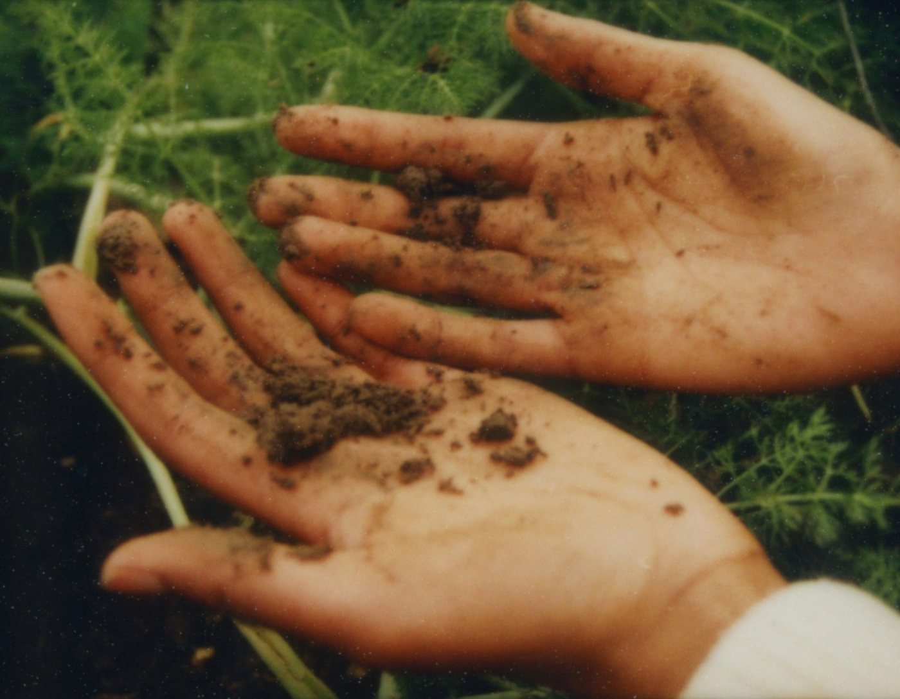

토성 판정
모래 · 미사 · 점토 비율을 넣으면 미국 농무부 12분류 기준의 토성 이름과 삼각도 위 자리를 보여 줍니다.
비율 넣기
12분류
| 토성 | 갈래 | 손 느낌 |
|---|---|---|
| 식토 | 식질 | 손가락 사이로 길게 리본이 늘어남, 끈적함 |
| 미사질식토 | 식질 | 매끈하고 끈적함, 리본 5 cm 넘음 |
| 사질식토 | 식질 | 끈적하지만 모래알이 느껴짐 |
| 미사질식양토 | 식질 | 매끈함, 리본 2.5~5 cm |
| 식양토 | 양질 | 약간 끈적함, 리본 2.5~5 cm |
| 사질식양토 | 양질 | 모래알이 많고 리본 2.5 cm 안팎 |
| 양토 | 양질 | 부드럽고 덩이가 쉽게 부서짐 |
| 미사질양토 | 양질 | 밀가루처럼 매끈함, 리본 짧음 |
| 미사토 | 양질 | 마르면 가루, 젖으면 매끈함 |
| 사양토 | 사질 | 모래알이 느껴지고 덩이가 겨우 뭉침 |
| 양질사토 | 사질 | 거의 뭉치지 않음 |
| 사토 | 사질 | 뭉치지 않고 흩어짐 |
손으로 보기
- 적시기흙 한 숟갈에 물을 조금씩 떨어뜨려 반죽
- 공 만들기손바닥에서 굴려 지름 2 cm 공
- 리본 밀기엄지와 검지 사이로 밀어 내 얇은 띠
- 재기띠가 끊어질 때까지의 길이 · 2.5 cm 미만이면 양토 쪽, 5 cm 넘으면 식토 쪽
손으로 본 값은 어림입니다. 정밀 세트의 토성(피펫법)은 모래 · 미사 · 점토를 %로 잽니다.
